Held-out numbers from the checked-in JSON artifacts. Plots are the real pipeline figures, not placeholders.
237 monophosphines, 17 descriptors. Label is vbur_ratio_vbur_vtot — a buried-volume ratio, not yield.
Doyle BH n=3955 and Perera Suzuki n=5760. Random-split R² is interpolation; leave-one-component is the test.
Retrospective ranking inside an existing BH condition pool. UCB beats random; the method does not invent ligands.
Kraken XGBoost R² 0.857 (RMSE 0.0182) on buried-volume ratio. BH multi-FP XGB random 5-fold R² 0.938 (RMSE 6.77). Doyle reaction-0 bootstrap R² 0.932 (RMSE 7.84).
BH leave-one-ligand mean R² is only 0.36 because XPhos fails (R² ≈ −0.92). BrettPhos family transfers (multi-FP R² 0.94 / 0.90). Multi-FP lowers RMSE on 17/22 unseen additives.
Ligand GIN R² 0.185 vs tree R² 0.94 (four unique ligand graphs). Split conformal 80/90% coverage is 0.796 / 0.891. Retrospective UCB ends at 84.3 vs random 81.8 (pool max 86.6).
n=237 · train/val/test 141/48/48 · 17 Kraken descriptors (Excel O–AE) · SMILES only in the hybrid model.
Target column: vbur_ratio_vbur_vtot. XGBoost R² 0.8574 is a fit to that ratio, not a process yield.
ligand_outputs/results_summary.json
Dashboard slice: Doyle BH reaction 0, n=790, four ligands. Full scientific table: n=3955 (same four ligands × 22 additives × 3 bases × 15 aryl halides × 5 products).
Suzuki–Miyaura n=5760 is HPLC area%, a different physical quantity. Absolute RMSE is not comparable across the two reaction classes.
yield_bo_pyg_outputs/summary.json · hte_scientific_outputs/summary.json
Character-level SMILES adds signal beyond the 17 descriptors (hybrid R² 0.760 vs attention 0.542) and still loses to trees. Group attention is an explanation head: mean weights O–Q 0.25, R–T 0.15, U–W 0.32, X–AE 0.28.
Top XGBoost importances: sterimol_B1 0.260, E_solv_total 0.185, sterimol_B5 0.118, sterimol_burL 0.076, vbur_vbur.2 0.073.
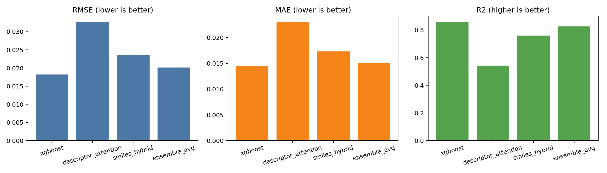
XGBoost has the lowest RMSE (0.0182) and highest R² (0.857). The ensemble is insurance, not a better head; attention is the weakest predictor.
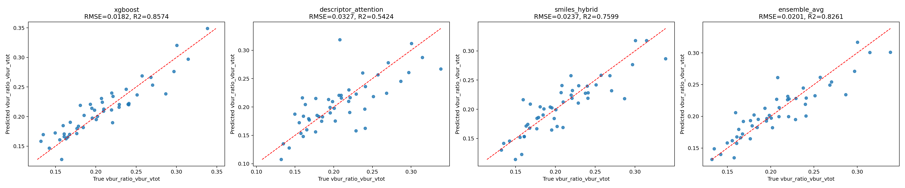
XGBoost stays on the diagonal. Attention residuals are large enough that those scores are explanation-only, not a second yield-like readout.
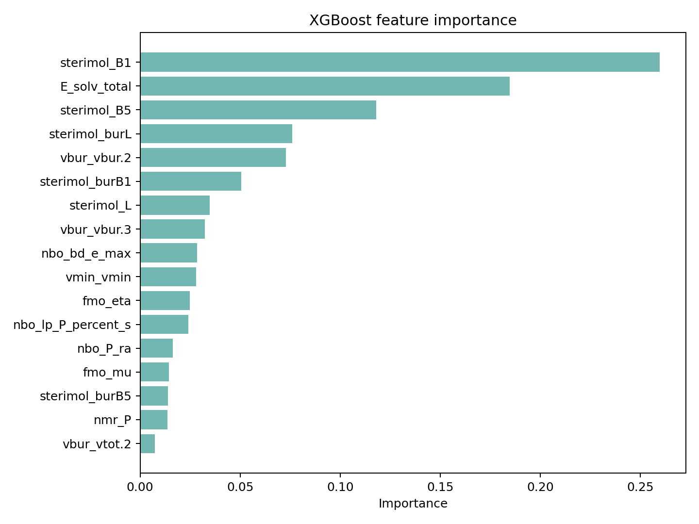
sterimol_B1 (0.260) and E_solv_total (0.185) dominate; electronic terms (NBO, FMO, nmr_P) sit lower. This is a steric/solvation ranking of a buried-volume-ratio model.
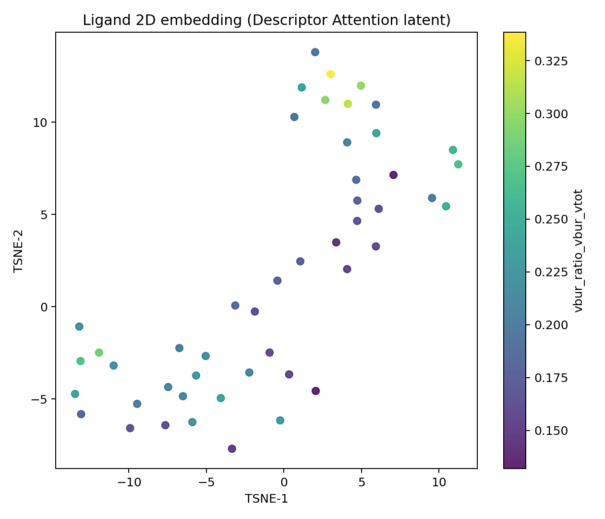
The 2D embedding is organized by vbur_ratio_vbur_vtot. Nearby ligands share similar buried-volume-ratio labels, which is a shortlist geometry, not a reaction-family map.
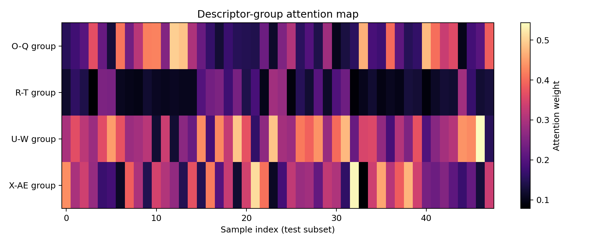
U–W (buried volume) and X–AE (electronics/solvation) carry most mass on average, but several test ligands flip U–W vs O–Q, so one global importance vector is incomplete.
RMSE 9.26 ± 0.59 · R² 0.899. Same four ligands on both sides of the split.
RMSE 14.19 ± 4.81 · R² 0.707 (fold R² 0.90 and 0.51). That is the generalization number for this 790-row slice.
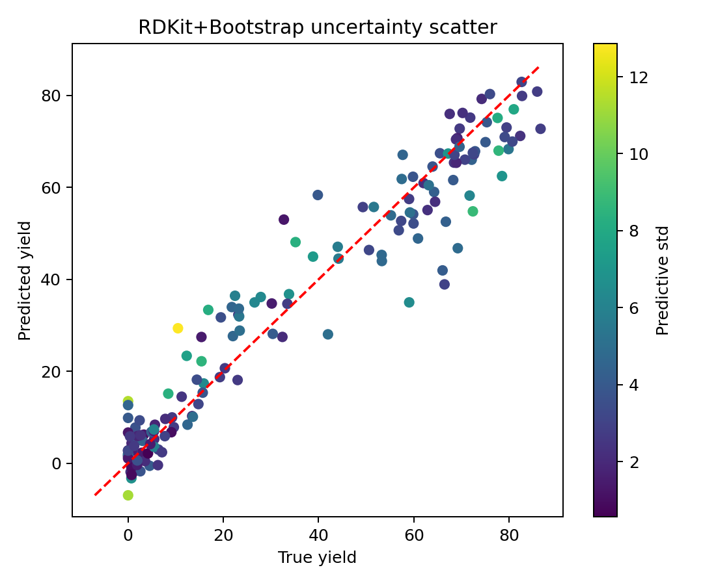
Test R² 0.932 with mean bootstrap std 3.90 yield points. The quantile 80% interval is wide (mean width 37.7) and slightly under-covered (0.785 vs 0.80).
| # | Ligand | Additive | Base | ArX | True y | Pred | Std | EI |
|---|---|---|---|---|---|---|---|---|
| 1 | tBuXPhos | 5-Me-isoxazole-4-CO2Et | MTBD | 4-Et-C6H4-I | 84.9 | 86.3 | 2.74 | 0.95 |
| 2 | AdBrettPhos | 3-methylisoxazole | MTBD | 4-Et-C6H4-I | 83.1 | 86.1 | 2.60 | 0.81 |
| 3 | tBuXPhos | 5-Me-isoxazole-4-CO2Et | MTBD | 4-Et-C6H4-Br | 86.6 | 81.8 | 5.02 | 0.45 |
| 4 | AdBrettPhos | 3-phenylisoxazole | MTBD | 4-Et-C6H4-I | 82.6 | 84.8 | 2.44 | 0.33 |
| 5 | AdBrettPhos | 5-Me-isoxazole-4-CO2Et | MTBD | 4-Et-C6H4-I | 85.9 | 85.4 | 1.66 | 0.22 |
| 6 | tBuBrettPhos | 4-phenylisoxazole | MTBD | 4-Et-C6H4-I | 83.3 | 78.1 | 5.94 | 0.21 |
| 7 | AdBrettPhos | benzisoxazole | MTBD | 4-Et-C6H4-I | 70.3 | 57.4 | 15.58 | 0.18 |
| 8 | tBuXPhos | 3-phenylisoxazole | MTBD | 4-Et-C6H4-Br | 83.1 | 81.7 | 3.57 | 0.14 |
Row 7 is high-EI because std is 15.6, not because the mean is high. This ranks existing tuples; it does not generate new ligands. XPhos is in the pool and is absent from the top eight.
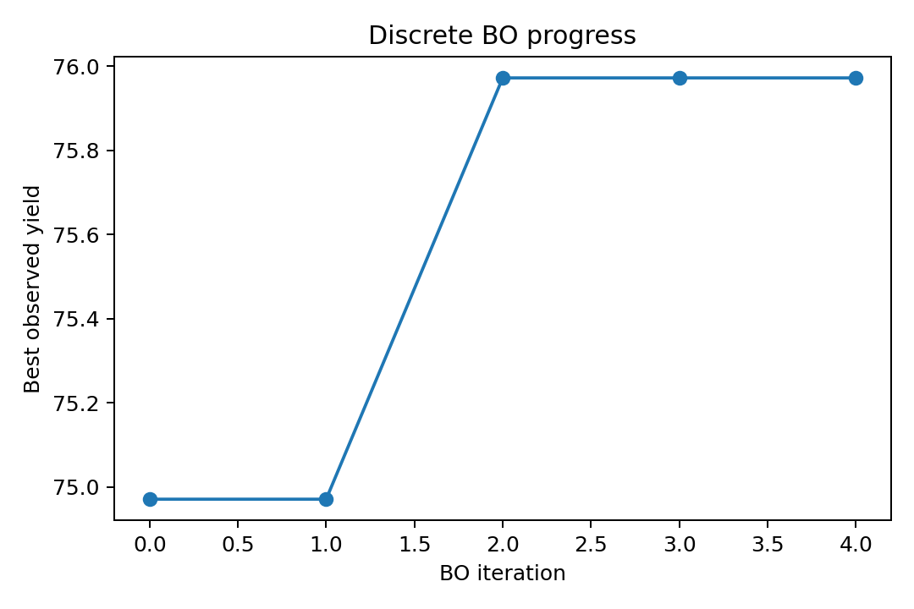
The short logged run moved best observed yield from 74.97 to 75.97. The EI table already contains mid-80s conditions; this curve is a 5-iteration trace, not the 8-seed campaign.
n=3955 · 4 ligands × 22 additives × 3 bases × 15 aryl halides × 5 products. Isolated-style yield.
Models: main-effects ANOVA, one-hot XGB, ligand-only FP XGB (previous pipeline), multi-component FP XGB, residual XGB.
n=5760 · 11 named ligands + no-ligand. Label is HPLC area%, not the same quantity as BH yield.
Second reaction class so a strong BH interpolation curve is not treated as a universal encoder.
| Split | Main-eff R² | One-hot R² | Ligand-FP R² | Multi-FP R² | Multi-FP RMSE |
|---|---|---|---|---|---|
| Random 5-fold | 0.601 | 0.906 | 0.908 | 0.938 | 6.77 |
| Leave-one-ligand (mean) | −0.047 | 0.361 | 0.388 | 0.365 | 14.64 |
| Leave-one-product | −0.127 | −0.340 | −0.293 | 0.084 | 21.64 |
| Unseen additives (GroupKFold) | 0.421 | 0.626 | 0.625 | 0.718 | 14.25 |
| Leave-one-additive ×22 (mean) | — | 0.223 | 0.219 | 0.451 | 13.58 |
| Unseen aryl halide | −0.523 | −0.373 | −0.366 | 0.152 | 17.27 |
Leave-one-additive median is the stable summary: one-hot R² 0.69 / RMSE 14.3 vs multi-FP R² 0.77 / RMSE 12.5. Mean leave-one-ligand R² 0.36 is pulled down by XPhos.
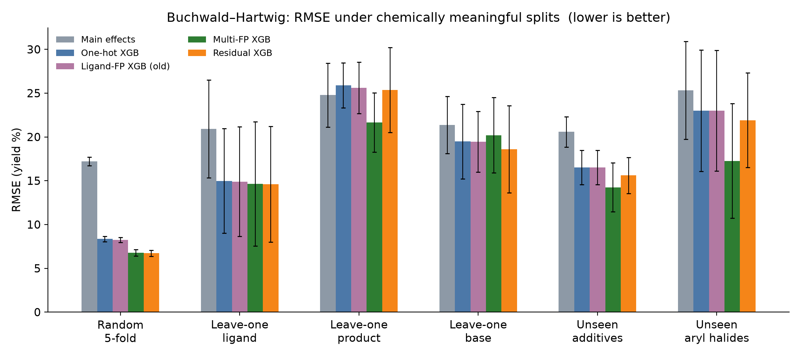
Multi-FP / residual XGB cut random-split RMSE to 6.77–6.72. On unseen additives and aryl halides they still beat one-hot and ligand-only FP; leave-one-ligand stays ~14.6 because transfer is ligand-specific.
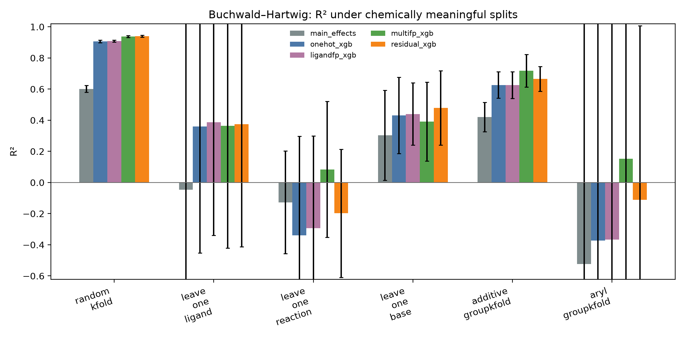
Random-split R² 0.94 is interpolation. Multi-FP is the only model with positive mean R² on unseen products (0.084) and unseen aryl halides (0.152); leave-one-ligand error bars span from transfer to failure.
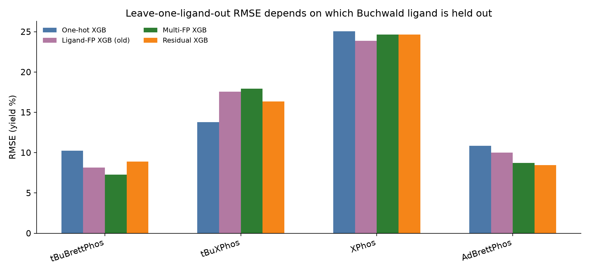
tBuBrettPhos and AdBrettPhos transfer (multi-FP RMSE 7.26 / 9.11). tBuXPhos gets worse under fingerprints (17.95 vs one-hot 13.71). XPhos (PCy2) fails for every model (~24–25 RMSE, R² ≈ −1).
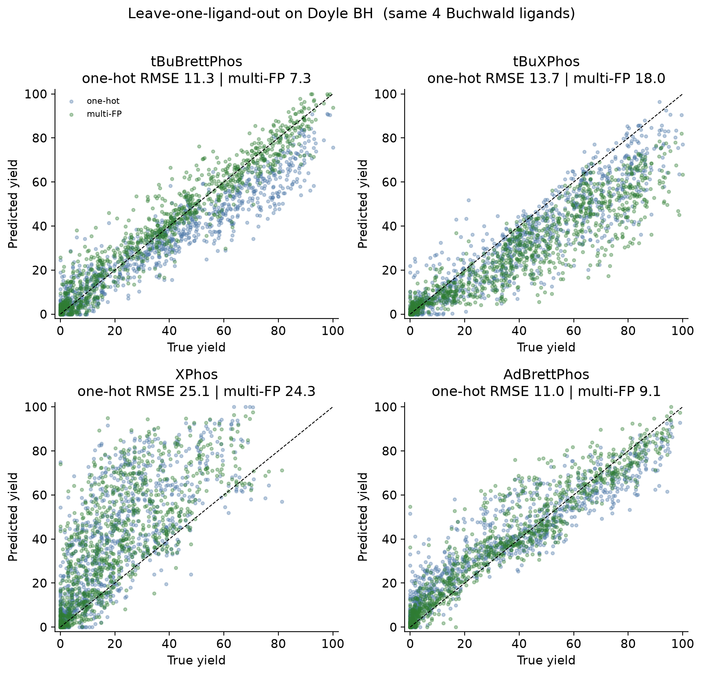
BrettPhos-family panels hug the diagonal. XPhos predictions are uncorrelated with true yield. Four Buchwald ligands are not a universal ligand encoder.
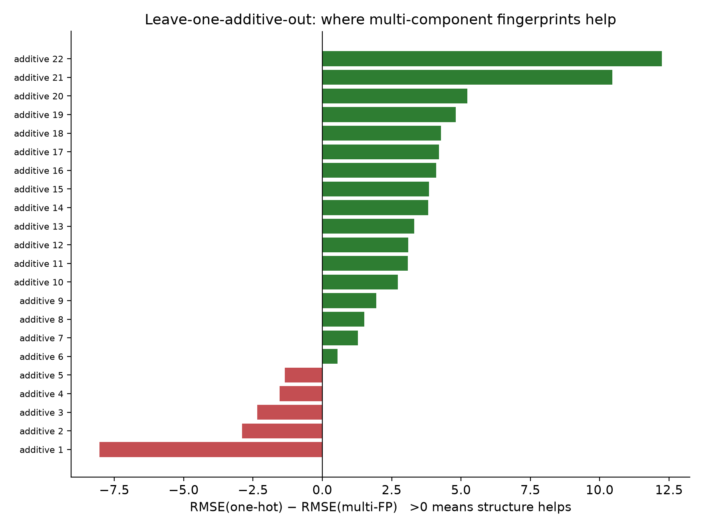
Green bars are lower multi-FP RMSE. Median leave-one-additive R² rises from 0.69 (one-hot) to 0.77 (multi-FP). Structure on the additive is the diversity that actually moves.
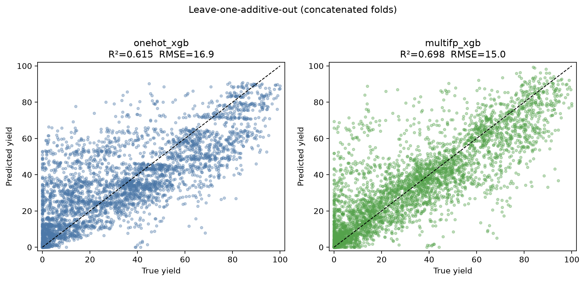
Pooled LOAO R² improves from 0.616 (one-hot) to 0.698 (multi-FP). Residual scatter remains large at mid yields; additive structure is useful, not sufficient.
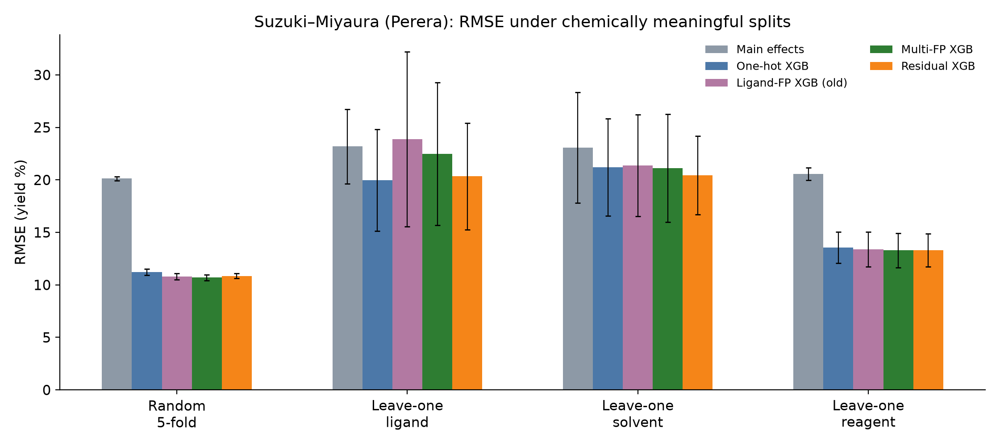
Random 5-fold multi-FP R² is 0.855 (RMSE 10.70). Leave-one-reagent stays easy (R² 0.76). Leave-one-ligand and leave-one-solvent collapse; fingerprints do not beat one-hot on unseen ligands.
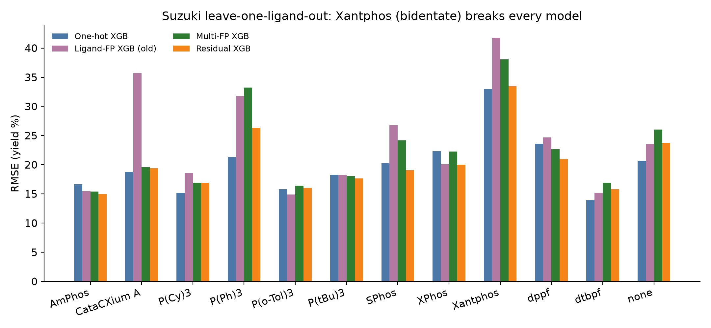
Xantphos is bidentate and every model goes negative (multi-FP R² −3.98, RMSE 38.1). Named-ligand Morgan fingerprints are not a universal ligand encoder across mono- and bis-phosphines.
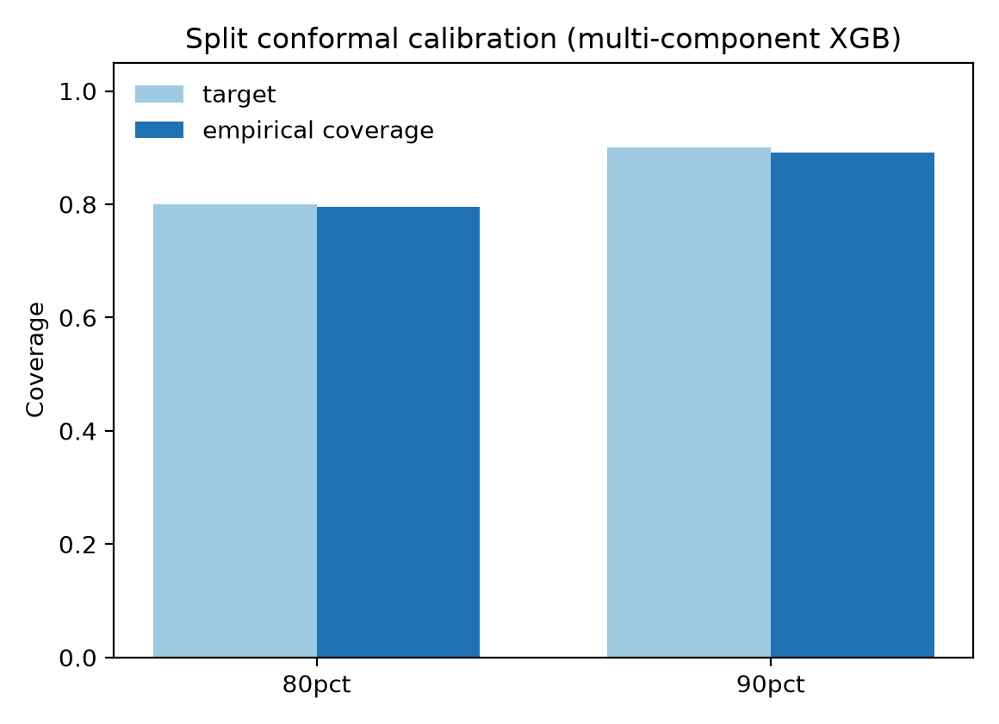
Multi-FP XGB, random hold-out: 80% interval coverage 0.796 (mean width 16.3, q̂ 8.14); 90% coverage 0.891 (mean width 22.8). Test RMSE 7.73, R² 0.922.
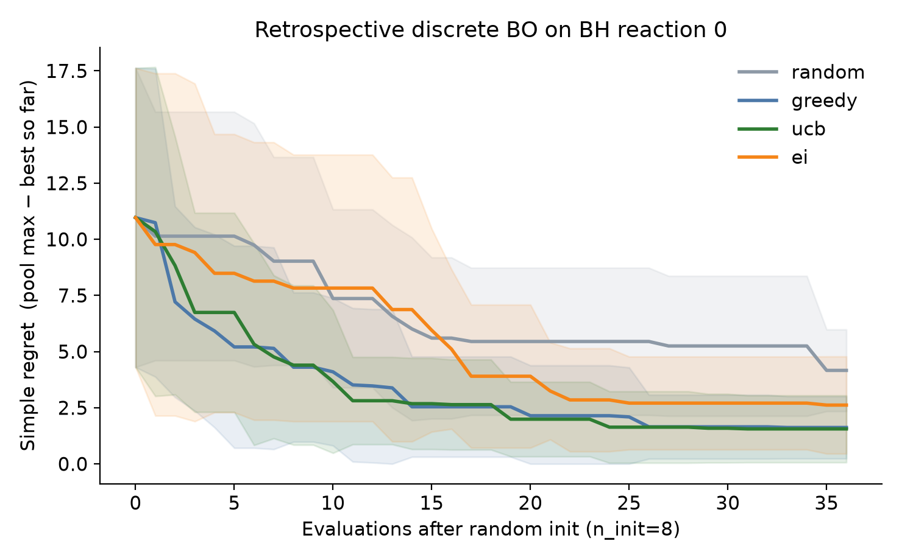
Pool n=790, global max 86.60, 8 seeds, 20 random init + 28 steps. Final best yield: random 81.84 ± 2.23, greedy 83.84 ± 2.49, UCB 84.31 ± 2.49, EI 83.55 ± 2.25. Pool simulation, not a wet experiment.
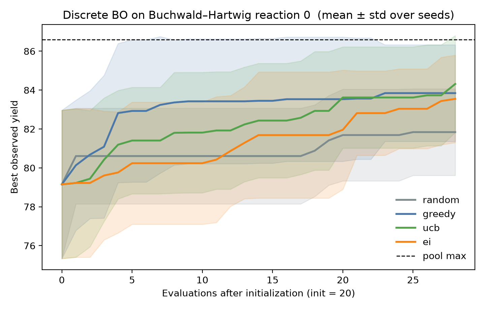
The pool is already rich: random initialization starts near 79. Acquisition policies finish 2–2.5 yield points above random and still short of the 86.6 pool maximum. This is ranking, not DOE replacement.